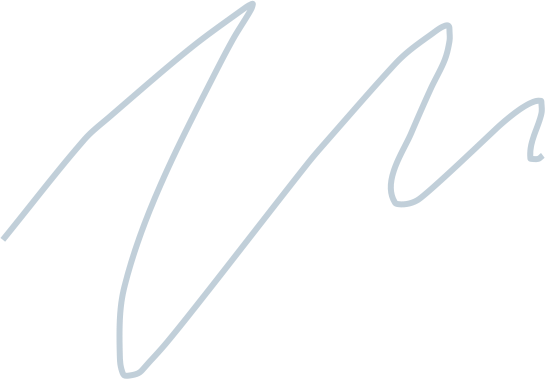
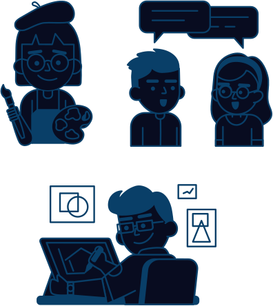

Indulge your passions
Your passions shouldn't be just for the weekend. Earn a living doing what you love.



The 9-5 grind is so last century. We believe in living life on your own terms. Whether you're looking to escape the rat race or set up a side hustle, we've got you covered.
Your passions shouldn't be just for the weekend. Earn a living doing what you love.
Start making money work for you. There's nothing quite like earning while you sleep.

Own your daily schedule. Fancy a lie-in? Go for it! Take charge of your week.

Selling online means not being pinned down. Want to work AND travel? Go for it!
We only make money when our creators make money. Our plans are always affordable, and it's completely free to get started.
Just getting started? No problem at all! Our free plan will take you a long way.
Ready for the big time? Our paid plan will help you take your business to the next level.